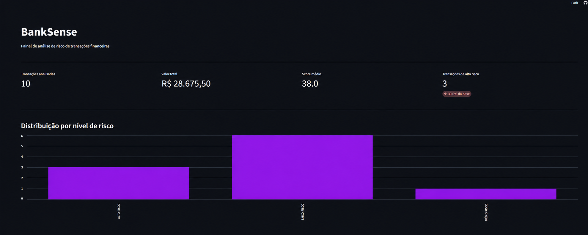

Análise e tratamento
Preparação, organização e validação de dados para análise.
Em busca de estágio em Dados e BI
Olá, eu sou
Estudante de Análise e Desenvolvimento de Sistemas.
Um olhar atento às pessoas, aos processos e aos dados.
DADOS / TECNOLOGIA / APRENDIZADO CONTÍNUO
01 / APRESENTAÇÃO
Sou Ingrid Rangel da Fonseca, estudante de Análise e Desenvolvimento de Sistemas, com foco em Dados e Business Intelligence. Tenho formação em Enfermagem, com experiência em organização de informações, conferência de registros e trabalho em equipe. Tenho base em Python, SQL, Pandas, Power BI e Excel, aplicados ao tratamento de dados, à análise de indicadores e à criação de dashboards. Busco uma oportunidade de estágio para contribuir com soluções em Dados e BI e desenvolver minha carreira em tecnologia.
02 / CAMINHO ATÉ AQUI
Experiências que fazem parte da minha formação e do meu olhar para a tecnologia.
Universidade Veiga de Almeida · UVA
Formação atual em tecnologia, acompanhada de projetos pessoais e estudos em Dados e Business Intelligence.
AssistCare RJ · Home Care
Organização e conferência de registros, elaboração de relatórios em sistemas informatizados e comunicação com equipes multiprofissionais.
Faculdade Líbano
Enfermagem do Trabalho e Gestão em Segurança do Trabalho; Auditoria em Enfermagem; Enfermagem em Urgência, Emergência e UTI.
Universidade Estácio de Sá
Formação na área da saúde, com vivência de estágio em atenção primária e urgência e emergência.
03 / CONHECIMENTO EM CONSTRUÇÃO
Minha base técnica e os assuntos que continuo explorando.
Preparação, organização e validação de dados para análise.
Estruturação de dados e consultas para responder perguntas de negócio.
Indicadores e dashboards para explorar e comunicar resultados.
Versionamento de projetos e aprofundamento em fundamentos de nuvem e qualidade das informações.
04 / DA TEORIA À PRÁTICA
Projetos pessoais desenvolvidos com dados fictícios para praticar e demonstrar conhecimentos.
Projeto pessoal de análise financeira e comercial de uma empresa fictícia de cosméticos. Os dados e os resultados apresentados são simulados.
Utiliza Python e Pandas para preparar e validar os dados, PostgreSQL no Supabase para consultas SQL e Power BI com DAX para um dashboard de cinco páginas. Inclui uma análise complementar em Excel.
O painel analisa receita, custos e margem, compara realizado e orçamento dos mesmos meses e apresenta uma previsão de receita.
Projeto pessoal de análise de risco de transações financeiras fictícias. Utiliza Python e Pandas para processar os dados e classificar transações com regras de negócio.
O dashboard em Streamlit apresenta indicadores, filtros, um gráfico de distribuição por nível de risco e uma tabela com exportação dos resultados.
Os dados e os resultados são simulados para fins de aprendizado.

05 / PRÓXIMO PASSO
Vamos conversar? Busco uma oportunidade de estágio para aprender, colaborar e desenvolver minha carreira em Dados e BI.